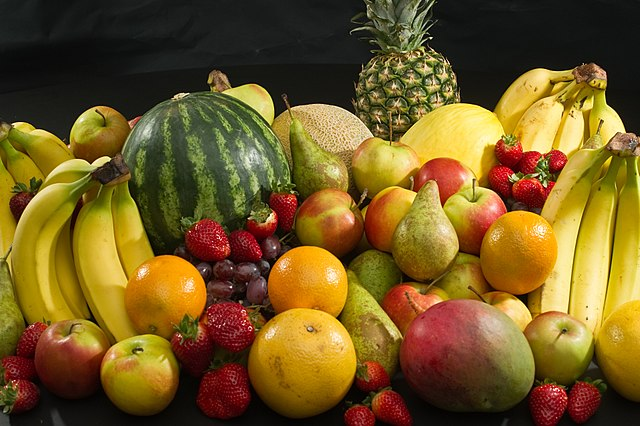

In botany, a fruit is the seed-bearing structure in flowering plants (also known as angiosperms) formed from the ovary after flowering.

What else is there about Fruit?
Many hundreds of fruits, including fleshy fruits (like apple, kiwifruit, mango, peach, pear, and watermelon) are commercially valuable as human food, eaten both fresh and as jams. They are also used in manufactured foods and beverages.